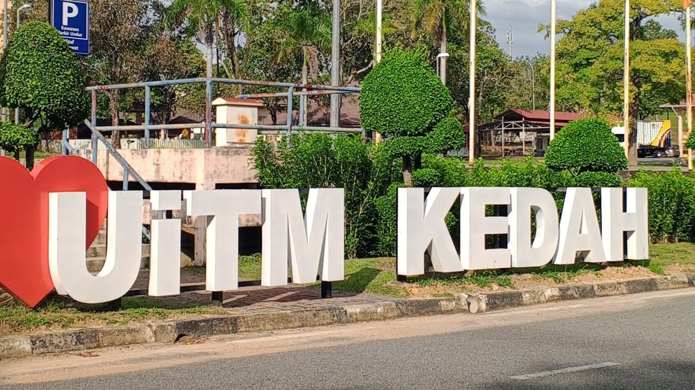
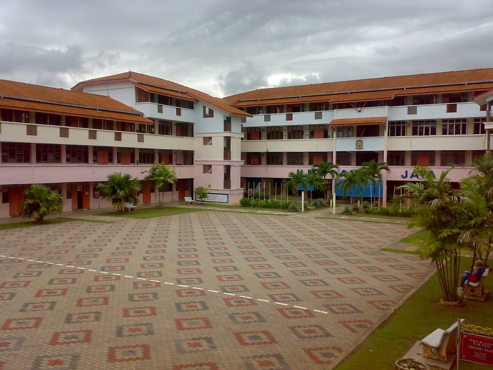

My Education Journey
Diploma in Information Management

- Institution: UiTM Kedah
- Duration: 2022 - Present
- Key Achievements: Dean's List in Semester 1 and Semester 3
Secondary School

- Institution: Sekolah Menengah Kebangsaan Paya Kemunting
- Graduated: 2021
- Curriculum Achievements:
- Chairman of the Computer Club
- Secretary for Cadet Police
Primary School

- Institution: Sekolah Kebangsaan Paya Kemunting
- Graduated: 2016